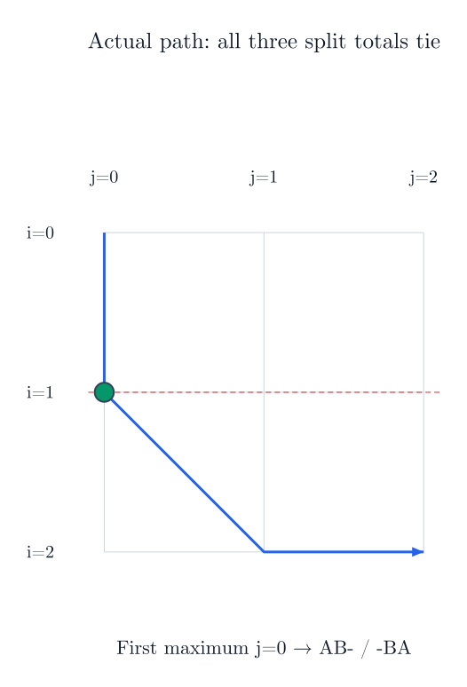
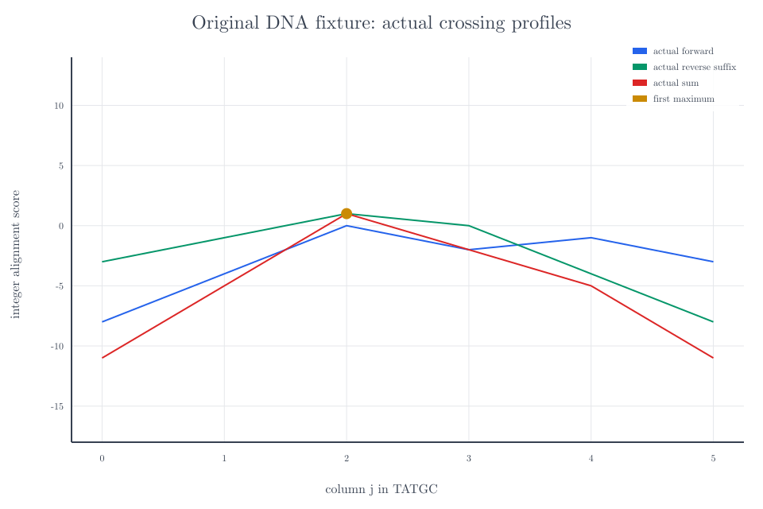
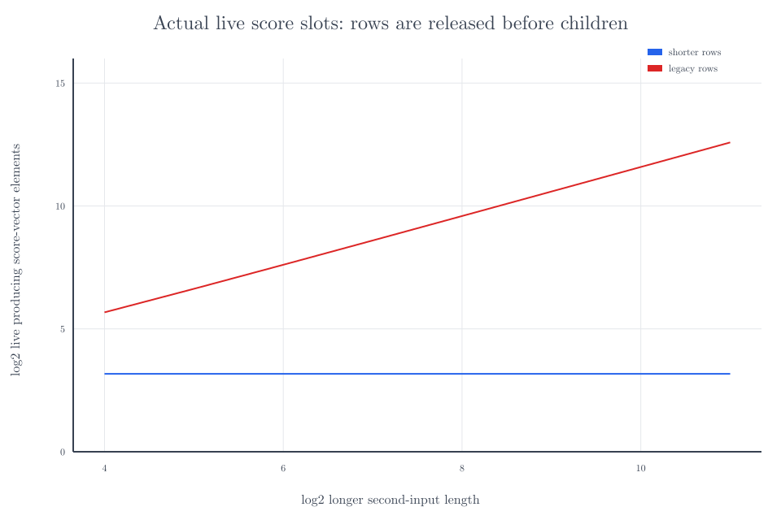
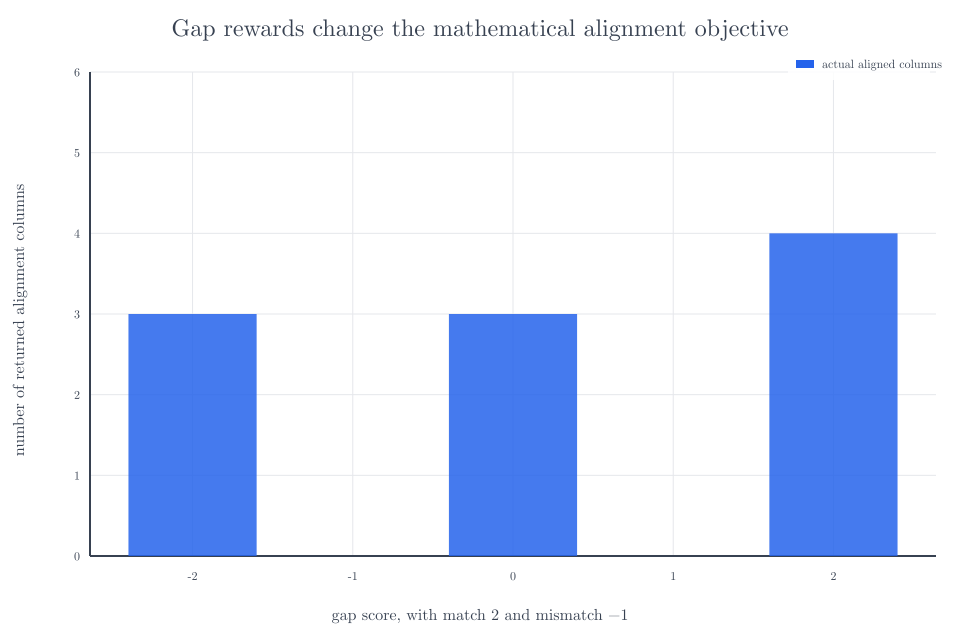

Hirschberg alignment: find a crossing, release the rows
Abstract
Align two entire byte strings while maximizing match, mismatch and linear gap scores. A dense dynamic-programming table can recover an optimal path, but its storage grows as the product of input lengths. Hirschberg recovers one optimum by finding a crossing on a middle row and recursing on two subproblems. This report follows actual split profiles, retains the original DNA-string example, and distinguishes tied alignments from identical scores. The core now releases parent rows before recursion, uses views instead of substring copies, and offers shorter row orientation. Score arrays, recursive frames, output strings and retained trace histories have separately stated costs.
A tiny tie: AB versus BA
Use match 2, mismatch −1 and gap −2. Splitting AB after A gives three candidate crossing columns in BA. Each has total score −2, so the preserved first-maximizer rule selects j=0. The resulting alignment is AB− against −BA, whereas dense Needleman–Wunsch can choose two mismatches, AB against BA, with that same score. ASCII '-' in output means a gap; the mathematical minus glyph in prose is only typography.
The table below comes from the producing forward/reverse sweeps. The concept diagram plots the actual returned alignment as a grid path, with a chosen crossing on the middle row. It does not reconstruct scores with a second report-local DP implementation.
#include <dm/dm.hpp>
int main() {
std::filesystem::create_directories("build");
const auto t = dm::algorithms::hirschberg_trace("AB", "BA");
const auto &r = t.splits.at(0);
const auto nw = dm::algorithms::needleman_wunsch("AB", "BA");
std::print("| candidate j | forward | reverse suffix | total | chosen |\n| ---: | ---: | ---: | ---: | " "--- |\n");
for (std::size_t j = 0; j < r.total.size(); ++j)
std::print("| {} | {} | {} | {} | {} |\n", j, r.forward[j],
r.reverse[j], r.total[j], j == r.b_mid);
std::print("\nHirschberg score {}; rows `{}` / `{}`. Dense NW score {}; rows `{}` / `{}`. Selected " "crossing ({},{}).\n",
t.run.alignment.score, t.run.alignment.a_aligned,
t.run.alignment.b_aligned, nw.score, nw.a_aligned, nw.b_aligned,
r.a_mid, r.b_mid);
dm::graphics::Diagram d(180, 1000);
dm::graphics::DiagramStroke grid;
grid.color = {203, 213, 225};
grid.width = 1;
for (int i = 0; i <= 2; ++i) {
d.path({{0, -double(i)}, {2, -double(i)}}, grid).path(
{{double(i), 0}, {double(i), -2}}, grid);
d.text({-.4, -double(i)}, std::format("i={}", i), 20).text(
{double(i), .35}, std::format("j={}", i), 20);
}
auto middle = grid;
middle.color = {220, 38, 38};
middle.dashed = true;
d.path({{-.1, -double(r.a_mid)}, {2.1, -double(r.a_mid)}}, middle);
std::vector<dm::graphics::DiagramPoint> path{{0, 0}};
std::size_t i = 0, j = 0;
for (std::size_t k = 0; k < t.run.alignment.a_aligned.size(); ++k) {
i += t.run.alignment.a_aligned[k] != '-';
j += t.run.alignment.b_aligned[k] != '-';
path.push_back({double(j), -double(i)});
}
dm::graphics::DiagramStroke chosen;
chosen.color = {37, 99, 235};
chosen.width = 3;
chosen.arrow = true;
d.path(path, chosen).ellipse({double(r.b_mid), -double(r.a_mid)}, .06, .06,
{5, 150, 105}).text({1, 1.2},
"Actual path: all three split totals tie",
25).text(
{1, -2.6},
std::format("First maximum j={} → {} / {}", r.b_mid,
t.run.alignment.a_aligned, t.run.alignment.b_aligned), 22).save_svg("build/hirschberg_tiny.svg");
if (r.b_mid != 0 || t.run.alignment.score != -2 || nw.score != -2)
throw std::runtime_error("tiny ties");
}| candidate j | forward | reverse suffix | total | chosen |
|---|---|---|---|---|
| 0 | -2 | 0 | -2 | true |
| 1 | -1 | -1 | -2 | false |
| 2 | 0 | -2 | -2 | false |
Hirschberg score -2; rows AB- / -BA. Dense NW score -2; rows AB / BA. Selected crossing (1,0).

Derive the split from the global recurrence
Let H(i,j) be the best score for prefixes a[:i] and b[:j]. With s equal to match or mismatch for the next byte pair and g the linear gap score,
For k=⌊n/2⌋, let F(j) score a[:k] against b[:j], and R(j) score a[k:] against b[j:]. Reverse traversal computes R without copying reversed strings. Any complete monotone grid path visits row k at some column j. Its two parts cannot score above F(j) and R(j), while concatenating optimal subpaths at any chosen j realizes their sum. Therefore
Choosing the first maximizing j fixes the split tie rule. Recursion on the two ranges reconstructs an optimum, with empty/one-character cases handled directly. The one-character implementation preserves the old diagonal/up/left traceback preference without allocating a dense base-case matrix. The proof applies to these additive symmetric linear scores, including unusual positive gap rewards; it does not cover affine gap-open scoring with extra states.
Preserve the original DNA-string example
The original inputs are AGTACGCA and TATGC, with scores 2/−1/−2. The first midpoint is 4 in the first string. The following program takes forward, suffix and summed profiles directly from the actual first split record, alongside the actual aligned output. Its dense reference is a separate native Needleman–Wunsch call; equal scores do not require identical gapped rows.
#include <dm/dm.hpp>
int main() {
std::filesystem::create_directories("build");
const std::string a = "AGTACGCA", b = "TATGC";
const auto t = dm::algorithms::hirschberg_trace(a, b);
const auto nw = dm::algorithms::needleman_wunsch(a, b);
const auto &s = t.splits.at(0);
std::print("Hirschberg score {}; rows `{}` / `{}`. Dense NW score {}; rows `{}` / `{}`.\n",
t.run.alignment.score, t.run.alignment.a_aligned,
t.run.alignment.b_aligned, nw.score, nw.a_aligned, nw.b_aligned);
std::print("\n| global split column | forward | reverse suffix | actual sum |\n| ---: | ---: | ---: | " "---: |\n");
std::vector<double> j, f, r, total;
for (std::size_t k = 0; k < s.total.size(); ++k) {
std::print("| {} | {} | {} | {} |\n", s.b_begin + k, s.forward[k],
s.reverse[k], s.total[k]);
j.push_back(k + s.b_begin);
f.push_back(s.forward[k]);
r.push_back(s.reverse[k]);
total.push_back(s.total[k]);
}
std::print("\nChosen midpoint ({},{}); actual split records {}; rolling cells {}; base pair scans {}; " "peak live score slots {}; max recursive depth {}.\n",
s.a_mid, s.b_mid, t.splits.size(), t.run.work.rolling_cells,
t.run.work.base_pairs, t.run.work.peak_score_slots,
t.run.work.max_depth);
auto plot = dm::graphics::RPlot::create();
plot.line(j, f, "actual forward", {37, 99, 235}, 2.).line(
j, r, "actual reverse suffix", {5, 150, 105}, 2.).line(j, total,
"actual sum",
{220, 38, 38}, 2.).points({double(s.b_mid)}, {double(s.total[s.b_mid - s.b_begin])}, "first maximum", {202, 138, 4}, 7.).title("Original DNA fixture: actual crossing profiles").x_label("column j in TATGC").y_label("integer alignment score").y_limits(-18, 14).save_svg("build/hirschberg_original.svg");
if (t.run.alignment.score != nw.score || s.a_mid != 4)
throw std::runtime_error("original score");
}Hirschberg score 1; rows AGTACGCA / --TATGC-. Dense NW score 1; rows AGTACGCA / --TATGC-.
| global split column | forward | reverse suffix | actual sum |
|---|---|---|---|
| 0 | -8 | -3 | -11 |
| 1 | -4 | -1 | -5 |
| 2 | 0 | 1 | 1 |
| 3 | -2 | 0 | -2 |
| 4 | -1 | -4 | -5 |
| 5 | -3 | -8 | -11 |
Chosen midpoint (4,2); actual split records 5; rolling cells 68; base pair scans 6; peak live score slots 18; max recursive depth 4.

What linear score storage means in this implementation
A rolling sweep allocates two rows of m+1 scores. Its returned forward row remains alive while a reverse sweep allocates two more, so the producing peak is three live score rows, not only two. Both returned profiles are destroyed before either recursive child is entered. Borrowed views replace substring/reversal copies, and one output buffer pair is appended instead of recursively concatenating alignment strings.
Legacy hirschberg retains the original input orientation, so its score-row
storage is O(b), even when b is longer. New run/trace calls default to
transposing the internal inputs when necessary to put the shorter string in the
score-row dimension. Results are returned in caller row order. This yields
O(min(n,m)) score values, plus O(log(max(n,m)+1)) recursive frames and O(n+m)
owned output. Transposition can change tied optimal rows but preserves the score
under symmetric scoring.
The next figure measures actual score-vector element peaks, not allocator capacity, bytes or process RSS. Its two-value first string makes the orientation distinction visible. Output length still grows with the longer input, and trace histories are absent from this experiment. A second table checks selected rolling/base work on balanced generated inputs, without timing claims.
#include <dm/dm.hpp>
int main() {
std::filesystem::create_directories("build");
std::vector<double> x, oriented, legacy;
std::print("| long second length | shorter-oriented peak scores | preserved-orientation peak scores | " "output columns | score agrees |\n| ---: | ---: | ---: | ---: | --- |\n");
for (int power = 4; power <= 11; ++power) {
const auto n = std::size_t{1} << power;
const std::string b(n, 'A');
const auto a = dm::algorithms::hirschberg_run("AB", b);
const auto old =
dm::algorithms::hirschberg_run("AB", b, {}, {false, 0, 0, 0});
std::print("| {} | {} | {} | {} | {} |\n", n, a.work.peak_score_slots,
old.work.peak_score_slots, a.alignment.a_aligned.size(),
a.alignment.score == old.alignment.score);
x.push_back(power);
oriented.push_back(std::log2(double(a.work.peak_score_slots)));
legacy.push_back(std::log2(double(old.work.peak_score_slots)));
if (a.work.peak_score_slots > 9 ||
old.work.peak_score_slots != 3 * (n + 1) ||
a.alignment.score != old.alignment.score)
throw std::runtime_error("oriented row bound");
}
std::print("\n| balanced length | actual rolling cells | actual base pair scans | calls |\n| ---: | " "---: | ---: | ---: |\n");
for (int power = 3; power <= 8; ++power) {
const auto n = std::size_t{1} << power;
std::string a(n, 'A'), b(n, 'B');
for (std::size_t j = 0; j < n; ++j) {
if (j % 3)
a[j] = 'B';
if (j % 2)
b[j] = 'A';
}
const auto r = dm::algorithms::hirschberg_run(a, b);
std::print("| {} | {} | {} | {} |\n", n, r.work.rolling_cells,
r.work.base_pairs, r.work.calls);
}
auto plot = dm::graphics::RPlot::create();
plot.line(x, oriented, "shorter rows", {37, 99, 235}, 2.).line(
x, legacy, "legacy rows", {220, 38, 38}, 2.).title(
"Actual live score slots: rows are released before children").x_label(
"log2 longer second-input length").y_label("log2 live producing score-vector elements").y_limits(0, 16).save_svg("build/hirschberg_space.svg");
}| long second length | shorter-oriented peak scores | preserved-orientation peak scores | output columns | score agrees |
|---|---|---|---|---|
| 16 | 9 | 51 | 16 | true |
| 32 | 9 | 99 | 32 | true |
| 64 | 9 | 195 | 64 | true |
| 128 | 9 | 387 | 128 | true |
| 256 | 9 | 771 | 256 | true |
| 512 | 9 | 1539 | 512 | true |
| 1024 | 9 | 3075 | 1024 | true |
| 2048 | 9 | 6147 | 2048 | true |
| balanced length | actual rolling cells | actual base pair scans | calls |
|---|---|---|---|
| 8 | 112 | 8 | 13 |
| 16 | 478 | 17 | 27 |
| 32 | 1976 | 36 | 53 |
| 64 | 8046 | 73 | 107 |
| 128 | 32472 | 148 | 213 |
| 256 | 130478 | 297 | 427 |

At a split, the two sweeps evaluate n·m rolling cells. Child rectangles partition the second range while their first dimensions shrink by about one half, so their total area decreases geometrically. Together with base scans and output writing, this gives O(nm+n+m) time, including empty-input output costs. It does not promise fewer operations than a dense method. Owned full trace histories add actual retained arrays beyond the untraced storage bound.
Caps, score bounds and scoring assumptions
The default complete input cap is one million total bytes. The online work cap is ten million selected rolling DP cells plus base pair scans; each whole sweep or scan is admitted before its work. Split capture defaults to one million logical units, charging one record plus 3(m_sub+1) score values per nonbase split. Whole records are admitted before that call's profile work/capture. Zero disables each optional policy; the history cap is ignored without tracing. These are logical counts, not bytes or peak RAM. A failure returns no partial result and leaves input strings unchanged.
The output uses ASCII '' as its gap marker, so inputs containing a literal ''
are rejected. Other bytes, including NUL, compare literally; this is not a
Unicode-codepoint alignment API. Conservative arithmetic admission requires
(n+m) times the largest absolute scoring component to be at most INT_MAX,
preventing overflow even in candidate paths. This may reject an extreme scheme
whose particular optimum would fit. Input/domain checks precede optional caps.
Legacy calls have no optional policy caps and retain their original ties on
admitted inputs.
#include <dm/dm.hpp>
int main() {
std::filesystem::create_directories("build");
const auto t = dm::algorithms::hirschberg_trace("AB", "BA");
const auto work = t.run.work.rolling_cells + t.run.work.base_pairs;
const auto exact =
dm::algorithms::hirschberg_trace("AB", "BA", {},
{false, 4, work, t.captured_entries});
bool input =
false, capture =
false, budget = false, reserved = false, overflow = false;
try {
(void) dm::algorithms::hirschberg_run("AB", "BA", {}, {false, 3, 0, 0});
} catch (const std::length_error &) {
input = true;
}
try {
(void) dm::algorithms::hirschberg_trace("AB", "BA", {},
{false, 0, 0,
t.captured_entries - 1});
} catch (const std::length_error &) {
capture = true;
}
try {
(void) dm::algorithms::hirschberg_run("AB", "BA", {},
{false, 0, work - 1, 0});
} catch (const std::length_error &) {
budget = true;
}
try {
(void) dm::algorithms::hirschberg("-", "A");
} catch (const std::invalid_argument &) {
reserved = true;
}
try {
(void) dm::algorithms::hirschberg("A", "A",
{std::numeric_limits<int>::max(), -1,
-2});
} catch (const std::overflow_error &) {
overflow = true;
}
std::print("Exact tiny capture {} units; selected work {} cells/scans. One-short input/capture/work " "rejects {}/{}/{}. Reserved gap rejects {}; extreme score rejects {}.\n",
exact.captured_entries, work, input, capture, budget, reserved,
overflow);
const std::string nul_a("A\0B", 3), nul_b("A\0C", 3);
const auto bytes = dm::algorithms::hirschberg_run(nul_a, nul_b);
std::print("NUL-byte fixture score {}; output columns {}.\n",
bytes.alignment.score, bytes.alignment.a_aligned.size());
std::vector<double> gap, columns;
std::print("\n| gap score | actual optimal score | actual output columns |\n| ---: | ---: | ---: |\n");
for (int g : {-2, 0, 2}) {
const auto r = dm::algorithms::hirschberg_run("AB", "BA", {2, -1, g});
gap.push_back(g);
columns.push_back(r.alignment.a_aligned.size());
std::print("| {} | {} | {} |\n", g, r.alignment.score,
r.alignment.a_aligned.size());
}
auto plot = dm::graphics::RPlot::create();
plot.bars(gap, columns, "actual aligned columns", {37, 99, 235}, .8).title(
"Gap rewards change the mathematical alignment objective").x_label(
"gap score, with match 2 and mismatch −1").y_label(
"number of returned alignment columns").y_limits(0, 6).save_svg(
"build/hirschberg_controls.svg");
if (!input || !capture || !budget || !reserved || !overflow ||
bytes.alignment.score != 3)
throw std::runtime_error("policy controls");
}Exact tiny capture 10 units; selected work 6 cells/scans. One-short input/capture/work rejects true/true/true. Reserved gap rejects true; extreme score rejects true. NUL-byte fixture score 3; output columns 3.
| gap score | actual optimal score | actual output columns |
|---|---|---|
| -2 | -2 | 3 |
| 0 | 2 | 3 |
| 2 | 8 | 4 |

Calls share no internal mutable state. Output rows and split arrays own their
storage and copy independently; no borrowed input views survive a call. Split
coordinates refer to internally oriented inputs, with transposed making that
orientation explicit. Forward and suffix arrays, summed candidates and first
maximizing columns are actual producing records, not separately replayed
illustrations. Selected work excludes allocation, initialization, output writes,
profile-copy overhead and total machine operations.
What this establishes
A middle-row crossing reduces global traceback to two score sweeps and smaller subproblems. Correct score recovery permits different tied alignments, as the tiny example demonstrates. Linear score-row storage requires releasing parent profiles and treating input orientation deliberately; output, frames and retained histories still require storage of their own. The original synthetic DNA strings are the problem fixture here, so an unrelated dataset would add no evidence.
The original source is D. S. Hirschberg (1975), [A Linear Space Algorithm for Computing Maximal Common Subsequences](https://doi.org/10.1145/360825.360861), Communications of the ACM 18(6),341–343; an [author-hosted copy](https://ics.uci.edu/~dhirschb/pubs/p341-hirschberg.pdf) presents rolling Algorithm B, the middle-split theorem and first-maximizer Algorithm C. That paper develops longest common subsequences and sketches an edit-distance adaptation. This library applies the decomposition principle to additive global alignment scoring, with different boundary initialization and base reconstruction.
Verification compares complete legacy alignments under all checked short binary pairs and 27 scoring schemes, checks independently scored output rows and all captured split profiles, and instruments live score/work counts under sanitizers. A separate exact monotone-path enumeration checks short global alignment optima without a rolling DP implementation. Domain, cap, orientation, ownership, embedded-NUL and integer-bound controls accompany the report. API examples, all complete programs, inspected figures and both exports are verified before retiring the original report.